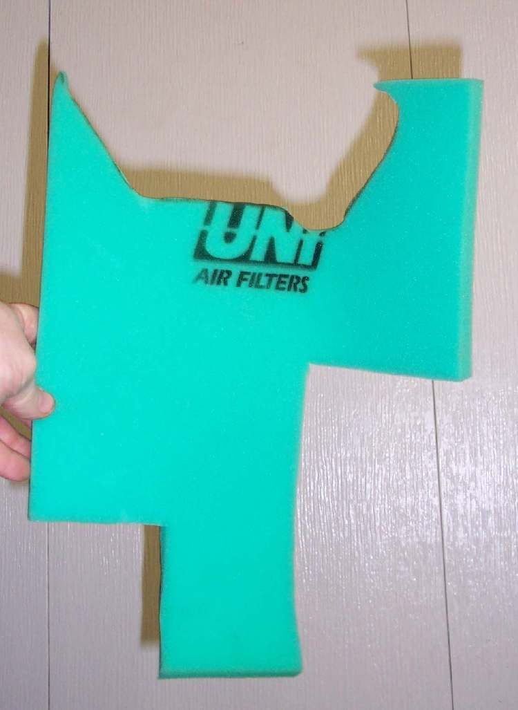
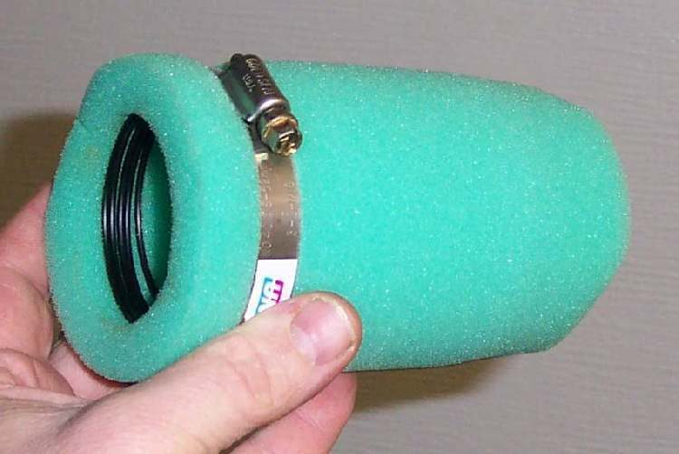

A bike must never run without an air filter, and a filter for an old model can be hard to find. A copy of the original can be cut from foam made for air filters and glued together. This is a stop-gap or a low-cost option, not a perfect match for the original.
Before you start
- Use foam sold as air filter foam, in sheets. Other foam may break up or let dirt through.
- Keep the old filter or its frame. It is the pattern.
- Read Clean and re-oil a foam air filter first, because the new element needs the same oil.
Steps
- Lay the old filter or frame on the foam and trace each piece that is needed.
- Cut the pieces out with a sharp knife or scissors. Keep the edges clean and square.
- Join the pieces with hot glue so that there are no gaps. Gaps let dirt past the filter.
- Let the glue cool, then work foam filter oil into the foam until it is evenly wet. Squeeze out the extra.
- Fit the element in the airbox or on the carburettor. It must seal around its edges and its frame.
- Check the mixture. A change of filter type can make the bike run rich or lean, so follow Check the mixture after changing the air filter or airbox.
Check your work
- No light shows through a joint when the element is held up.
- The engine idles and picks up as before, and the plug colour is normal.